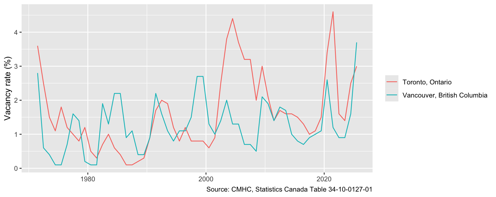
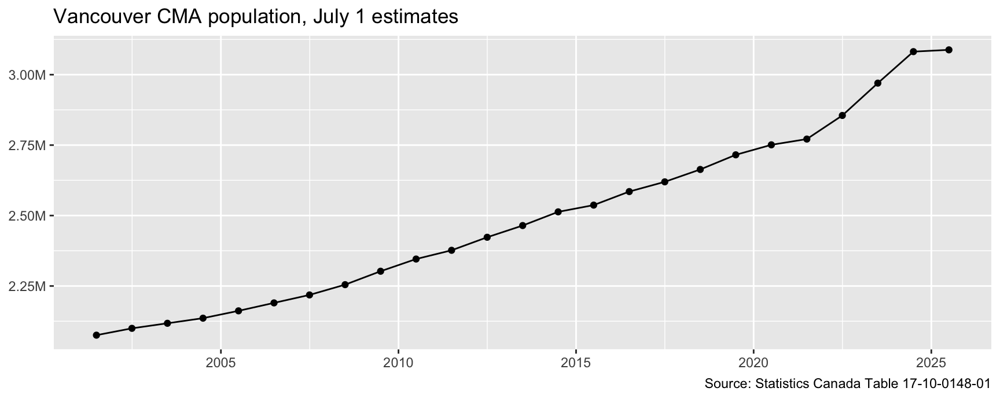
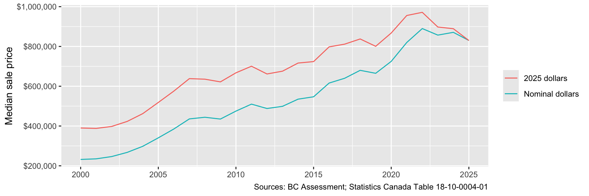

library(tidyverse)
library(cansim)
vacancy <- get_cansim("34-10-0127-01")
dim(vacancy)[1] 1746 18COMM 407 · Finding, downloading, and checking StatCan and CMHC tables
31 October 2026
Go to Statistics Canada → Data and browse:
Each table has a number such as 34-10-0127-01.
Search for “vacancy rates”, then choose Housing and Census metropolitan area.
get_cansim() downloads the whole table: every place and every date.
# A tibble: 4 × 5
Date GEO VALUE UOM SCALAR_FACTOR
<date> <fct> <dbl> <chr> <chr>
1 1971-07-01 Census metropolitan areas 3.9 Rate units
2 1971-07-01 Calgary, Alberta 6.7 Rate units
3 1971-07-01 Edmonton, Alberta 5.1 Rate units
4 1971-07-01 Greater Sudbury, Ontario 0 Rate units VALUE is the number. UOM and SCALAR_FACTOR give its unit, such as a rate, persons, or thousands of dollars.
# A tibble: 2 × 1
GEO
<fct>
1 Toronto, Ontario
2 Vancouver, British Columbiastr_detect() matches any name that contains the text. Always check which places you kept.
population <- get_cansim("17-10-0148-01")
population |>
filter(str_detect(GEO, "Vancouver")) |>
count(Date) |>
head(3)# A tibble: 3 × 2
Date n
<date> <int>
1 2001-07-01 345
2 2002-07-01 345
3 2003-07-01 345There are 345 rows for Vancouver in each year. Why?
population |>
summarise(genders = n_distinct(Gender),
age_groups = n_distinct(`Age group`),
units = paste(unique(UOM), collapse = ", "))# A tibble: 1 × 3
genders age_groups units
<int> <int> <chr>
1 3 115 Persons, YearsEach row is one gender × age group, and some rows are ages in years, not persons.
Summing VALUE without filtering every dimension adds people to ages. R will not stop you.
van_pop <- population |>
filter(str_detect(GEO, "Vancouver"),
Gender == "Total - gender",
`Age group` == "All ages")
van_pop |> count(Date) |> distinct(n)# A tibble: 1 × 1
n
<int>
1 1count(Date) should show exactly one row per date before you plot or sum.

Table 18-10-0004-01 has a monthly consumer price index (CPI) for Vancouver.
cpi <- get_cansim("18-10-0004-01") |>
filter(GEO == "Vancouver, British Columbia",
`Products and product groups` == "All-items")
cpi |> count(Date) |> distinct(n)# A tibble: 1 × 1
n
<int>
1 1The annual CPI is the average of 12 monthly values. months flags a partial year: so far, 2026 has only 9 months.
bca <- read_rds("data/bca262.rds")
prices <- bca |>
filter(year(sale_date) <= 2025) |> # 2026 is a partial year
group_by(sale_year = year(sale_date)) |>
summarise(nominal = median(price, na.rm = TRUE)) |>
left_join(cpi_year, by = "sale_year") |>
mutate(real = nominal * cpi[sale_year == 2025] / cpi)
prices |> filter(sale_year %in% c(2000, 2025))# A tibble: 2 × 5
sale_year nominal cpi months real
<dbl> <dbl> <dbl> <int> <dbl>
1 2000 232000 96 12 390050
2 2025 830000 161. 12 830000A price in 2025 dollars is the price × (CPI in 2025 ÷ CPI in the year of sale).
ggplot(prices, aes(sale_year)) +
geom_line(aes(y = nominal, colour = "Nominal dollars")) +
geom_line(aes(y = real, colour = "2025 dollars")) +
scale_y_continuous(labels = scales::label_dollar()) +
labs(x = NULL, y = "Median sale price", colour = NULL,
caption = "Sources: BC Assessment; Statistics Canada Table 18-10-0004-01")
From 2000 to 2025 the median price rose 3.6-fold in nominal dollars, but 2.1-fold in 2025 dollars. AI reports nominal prices unless you ask, so say which dollars every axis uses.
Using Table 34-10-0145-01:
Table 34-10-0127-01 is CMHC’s vacancy rate, republished by Statistics Canada. CMHC’s Housing Market Information Portal has more detail, such as bedroom types and survey zones. Its download for the Vancouver CMA, 1990 to 2025:
[1] ",Studio,,1 Bedroom,,2 Bedroom,,3 Bedroom +,,Total,,"
[2] "1990 October,0.7,a ,0.7,a ,1.2,a ,2.0,b ,0.9,a ,"
[3] "1991 October,1.8,b ,2.1,a ,2.6,a ,1.6,a ,2.2,a ," vacancy_w <- read_csv("data/cmhc_vacancy_vancouver.csv", skip = 2, n_max = 36) |>
select(year = 1, Studio, `1 Bedroom`, `2 Bedroom`, `3 Bedroom +`, Total) |>
mutate(year = parse_number(year))
vacancy_w |> head(3)# A tibble: 3 × 6
year Studio `1 Bedroom` `2 Bedroom` `3 Bedroom +` Total
<dbl> <dbl> <dbl> <dbl> <dbl> <dbl>
1 1990 0.7 0.7 1.2 2 0.9
2 1991 1.8 2.1 2.6 1.6 2.2
3 1992 1.5 1.7 1.6 1.2 1.6This code reads the file. It skips the title lines, keeps the 36 years, drops the code columns, and turns “1990 October” into 1990.
Make vacancy_w long, with one row per year and bedroom type, as in deck 07. Then plot one line per bedroom type.
In 2025, the vacancy rate for all units was 3.7%, the highest since the table starts in 1990. The next highest was 2.7%, in 1998.
library(cmhc)
vacancy_cmhc <- get_cmhc(survey = "Rms", series = "Vacancy Rate",
dimension = "Bedroom Type", geo_uid = "59933",
breakdown = "Historical Time Periods")
vacancy_cmhc |> select(Date, `Bedroom Type`, Value, Quality) |> head(3)# A tibble: 3 × 4
Date `Bedroom Type` Value Quality
<date> <fct> <dbl> <fct>
1 1990-10-01 Studio 0.7 Excellent
2 1990-10-01 1 Bedroom 0.7 Excellent
3 1990-10-01 2 Bedroom 1.2 Excellentget_cmhc() downloads the same table and runs pivot_longer() for you. The codes become Quality, and suppressed cells NA: check Quality before you plot a series.
The Rental Market Survey counts purpose-built rentals with three or more units, each October. Condos rented out by their owners are not in it.
COMM 407